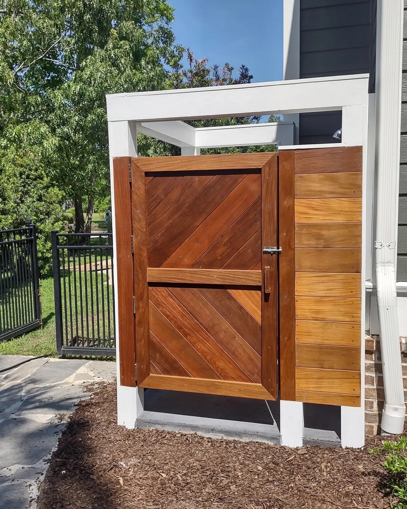
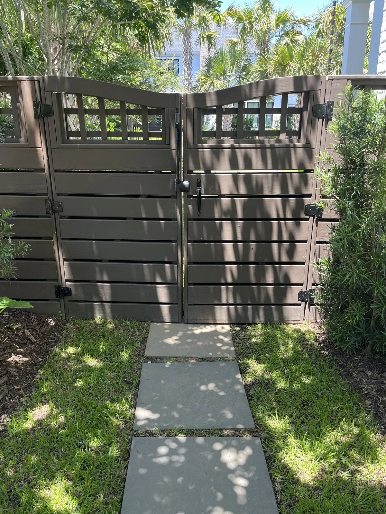
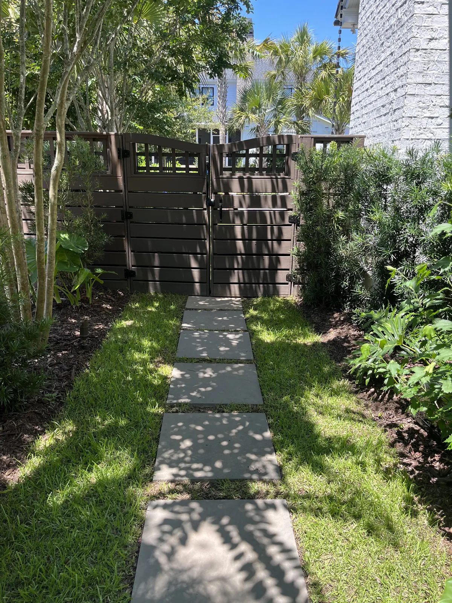
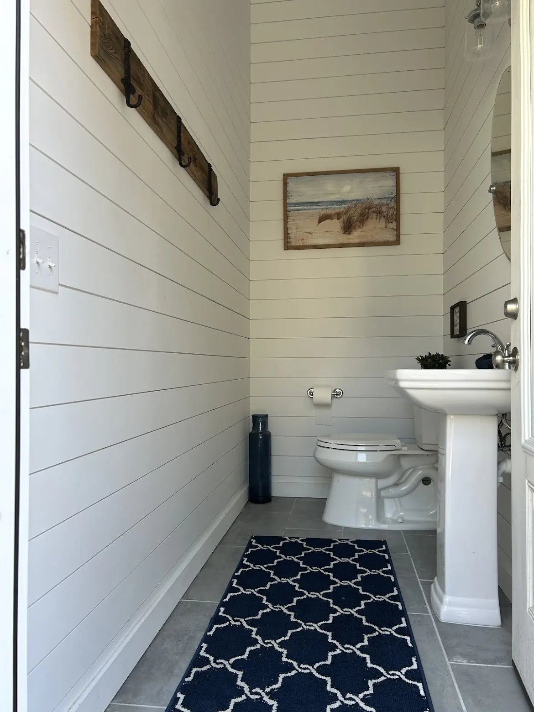

Outdoor Shower Installation in Charleston, SC

Professional Outdoor Shower Installation in Charleston, SC
Add convenience, functionality, and coastal charm to your Charleston property with a custom outdoor shower from Cramers Landscaping. Whether you're rinsing off after a day at Folly Beach, cooling down by the pool, or simply enjoying the convenience of an outdoor bathing space, our team designs and installs outdoor showers that blend seamlessly with your home's architecture and landscape.
Outdoor showers have become a must-have feature for Charleston homeowners—particularly those living near the coast. From Isle of Palms to Sullivan's Island, Mount Pleasant to James Island, we've built durable, beautiful outdoor shower installations that enhance outdoor living while protecting your home's interior from sand, salt, and chlorine.
Our mission is simple: deliver high-quality outdoor shower solutions that are both functional and built to last in Charleston's coastal climate.
Why Charleston Homeowners Choose Outdoor Showers
Outdoor showers aren't just a luxury—they're a practical addition to any Charleston home, especially properties near the beach or with pools. Here's why so many Lowcountry homeowners are adding custom outdoor showers to their backyards:
Keep Sand and Salt Out of Your Home
After a beach day, sand gets everywhere. An outdoor shower allows your family and guests to rinse off before stepping inside, protecting your floors, furniture, and plumbing from sand, salt, and grime.
Perfect for Pool Areas
Rinse off chlorine and sunscreen before and after swimming. An outdoor shower near your pool deck enhances hygiene and makes pool maintenance easier by keeping chemicals out of your grass and landscaping.
Enhance Your Outdoor Living Space
A well-designed outdoor shower becomes a stylish focal point in your backyard. With natural stone, custom tile, tropical plantings, and thoughtful placement, your outdoor shower can complement your patio, pergola, or pool area beautifully.
Coastal Lifestyle Convenience
Living in Charleston means embracing the outdoors. Whether you're coming home from the beach, gardening, working in the yard, or enjoying water sports, an outdoor shower provides instant convenience without tracking dirt and debris inside.
Increase Home Value
Outdoor showers are a sought-after feature in coastal real estate markets. A professionally installed outdoor shower can enhance your property's appeal to buyers and increase resale value—especially in beach communities.
Our Outdoor Shower Installation Services
At Cramers Landscaping, we specialize in designing and building custom outdoor showers tailored to your property, lifestyle, and budget. From simple rinse stations to luxurious spa-like retreats, we handle every detail from start to finish.

Custom Design & Layout
Every outdoor shower we build is customized to fit your space and style. We work with you to select:
- Shower placement – Near pool decks, beach access points, side yards, or patio areas
- Privacy features – Walls, fencing, natural screening, or open-air designs
- Materials – Stone, tile, concrete, tabby, wood accents, tropical plants
- Fixtures – Rainfall heads, handheld sprayers, foot wash stations, hooks, shelving
Our team considers water drainage, sun exposure, wind patterns, and sight lines to ensure your outdoor shower functions beautifully year-round.

Professional Plumbing & Drainage
Proper plumbing and drainage are critical for outdoor shower installations in Charleston. Our team handles:
- Hot and cold water lines – Connect to your home's plumbing for year-round comfort
- Drainage systems – French drains, dry wells, or connection to existing stormwater systems
- Code compliance – All work meets Charleston building codes and HOA requirements
- Winterization options – Shut-off valves and freeze protection for colder months
We coordinate with licensed plumbers when necessary and ensure your outdoor shower drains efficiently without creating pooling or erosion issues. Our drainage expertise ensures water flows away from your home's foundation and landscape.

Privacy Solutions
Privacy is a top concern for outdoor shower installations. We offer various solutions to create comfortable, secluded bathing spaces:
- Privacy walls – Built with natural stone, brick, stucco, or wood
- Screening plants – Bamboo, arborvitae, clumping bamboo, ornamental grasses
- Fencing – Custom wood or composite fencing that complements your home
- Pergola coverings – Overhead structures for partial shade and privacy
We balance privacy with airflow and natural light, creating spaces that feel open yet secluded.

Durable Coastal Materials
Charleston's coastal climate—humidity, salt air, intense sun—requires materials that can withstand the elements. We use:
- Stainless steel fixtures – Rust-resistant showerheads and hardware
- Natural stone – Travertine, flagstone, river rock for flooring and walls
- Concrete and tabby – Traditional Lowcountry materials that age beautifully
- Sapele hardwood – Our preferred wood choice for outdoor showers. More affordable than exotic hardwoods like ipe while offering exceptional durability in coastal environments. Sapele performs beautifully in Charleston's humidity and salt air, combining aesthetic appeal with practical longevity.
- Alternative wood options – Cedar or composite materials for budget-conscious projects
- Outdoor-rated tile – Slip-resistant, freeze-thaw resistant ceramic or porcelain
Every material we select is chosen for longevity, low maintenance, and aesthetic appeal in Charleston's coastal environment. Our custom builds blend seamlessly with your outdoor living spaces while withstanding the demands of coastal island life.
Outdoor Shower Design Styles
We build outdoor showers to match any architectural style and personal preference. Here are some popular options for Charleston homes:
Coastal & Tropical
Natural stone walls, pebble flooring, bamboo accents, and lush plantings create a resort-style outdoor shower that feels like a private oasis. Perfect for beach homes and tropical landscaping themes.
Modern Minimalist
Clean lines, concrete or tile finishes, sleek fixtures, and simple plantings deliver a contemporary look that complements modern Charleston architecture.
Traditional Lowcountry
Tabby walls, brick accents, vintage-style fixtures, and Southern charm create an outdoor shower that feels timeless and rooted in Charleston's history.
Rustic & Natural
Wood fencing, river rock flooring, natural screening, and earth-tone finishes blend seamlessly into garden settings and wooded properties.

Where to Install Your Outdoor Shower
Choosing the right location for your outdoor shower is essential for functionality and convenience. Common installation areas include:
- Near pool decks – Rinse before and after swimming
- Side yards or breezeway areas – Utilize narrow spaces efficiently
- Beach access points – Ideal for properties near the coast
- Patio or outdoor kitchen areas – Integrated into outdoor entertainment spaces
- Garden areas – Tucked among landscaping for natural privacy
- Dog wash stations – Dual-purpose showers for pets and people
Our team evaluates your property's layout, existing utilities, and traffic patterns to recommend the best placement for your outdoor shower.
The Cramers Landscaping Difference
As a Charleston-based outdoor shower contractor, we understand the unique needs of Lowcountry properties. Here's what sets us apart:
Local Coastal Expertise
We know Charleston's soil conditions, drainage challenges, salt air considerations, and building codes. Our team has installed outdoor showers across the region—from oceanfront properties to suburban backyards—and we customize every project to local conditions.
Full-Service Installation
From initial design and permitting through plumbing, drainage, hardscaping, and landscaping, we handle every aspect of your outdoor shower project. No need to coordinate multiple contractors—Cramers Landscaping manages it all.
Quality Materials & Craftsmanship
We use premium, coastal-grade materials and proven construction techniques to ensure your outdoor shower withstands Charleston's climate for years to come. Our work is built to last.
Integrated Landscape Design
Your outdoor shower should feel like a natural extension of your property. We integrate plantings, hardscaping, lighting, and irrigation to create cohesive outdoor spaces that enhance your entire landscape.
Outdoor Shower Installation Process
Our streamlined process ensures your outdoor shower project is completed on time, on budget, and to your exact specifications.
Initial Consultation

We visit your property to discuss your vision, evaluate the site, and review placement options. We'll talk about budget, timeline, design preferences, and functionality.
Custom Design & Planning

Our team creates a detailed design plan including materials, fixtures, privacy features, drainage solutions, and layout. We provide clear estimates and answer all your questions.
Permits & Approvals

If required, we handle permit applications and coordinate with local authorities or HOAs to ensure compliance with all regulations.
Professional Installation

Our skilled crew installs plumbing, drainage, hardscaping, privacy structures, and landscaping with attention to detail and minimal disruption to your property.
Final Walkthrough & Support

We ensure your outdoor shower functions perfectly, walk you through maintenance tips, and provide ongoing support for any questions or adjustments.


Outdoor Showers Paired With Other Services
Outdoor shower installations often complement other landscape and hardscape projects:
- Concrete Pool Decks – Rinse stations near pools
- Patios & Pavers – Integrated into outdoor entertainment areas
- Retaining Walls – Privacy walls and terracing
- Landscape Lighting – Illuminate your outdoor shower for evening use
- Drainage Systems – Proper water management
By designing your outdoor shower alongside related landscape projects, we ensure every component works together seamlessly.
Serving Charleston & Coastal Communities
Cramers Landscaping proudly provides custom outdoor shower installation services throughout Charleston and the Lowcountry, including:
We understand the specific needs of coastal properties and deliver outdoor shower installations built to withstand salt air, humidity, and frequent use.
Frequently Asked Questions
How much does outdoor shower installation cost in Charleston?
Outdoor shower costs vary based on design complexity, materials, plumbing requirements, and privacy features. Simple rinse stations start around $2,000-$4,000, while fully custom outdoor showers with hot water, stone finishes, and privacy walls can range from $5,000-$15,000+. We provide detailed estimates after evaluating your property.
Do I need a permit for an outdoor shower in Charleston?
Permit requirements depend on your project scope and location. Simple cold-water rinse stations often don't require permits, while projects involving new plumbing lines, drainage connections, or structures may need approval. We handle all necessary permits and ensure compliance with local codes.
Can I have hot water in my outdoor shower?
Absolutely. We can connect your outdoor shower to your home's hot water supply, allowing comfortable year-round use. Hot water lines are insulated and protected from Charleston's occasional freezing temperatures.
How do you handle drainage for outdoor showers?
Proper drainage is essential. We install French drains, connect to existing stormwater systems, or create dry wells to manage water runoff. Our drainage expertise ensures water flows away from your home and doesn't create pooling or erosion.
What materials work best for outdoor showers in coastal climates?
We recommend stainless steel fixtures, natural stone or concrete flooring, outdoor-rated tile, and rot-resistant wood or composite materials. These materials withstand Charleston's humidity, salt air, and UV exposure while maintaining their appearance.
How long does outdoor shower installation take?
Most outdoor shower projects take 3-7 days depending on complexity. Simple installations can be completed in a few days, while custom designs with extensive hardscaping, plumbing, and landscaping may take 1-2 weeks.
Will an outdoor shower increase my home's value?
Yes, especially in coastal markets like Charleston. Outdoor showers are highly desirable features for beach properties and homes with pools, and professionally installed showers enhance your property's appeal and resale value.
Can you build outdoor showers for dogs?
Definitely. We can design dual-purpose outdoor showers or dedicated pet wash stations with appropriate height fixtures, non-slip flooring, and drainage solutions for washing dogs after beach trips or outdoor adventures.
Request Free Outdoor Shower Consultation
Ready to add the convenience and luxury of a custom outdoor shower to your Charleston property?
Contact Cramers Landscaping today to schedule a free consultation. Our team will visit your property, discuss your vision, and provide a detailed estimate for your outdoor shower installation.
Call us at (843) 614-9773 or request a consultation to get started.
Cramers Landscaping | Professional Outdoor Shower Installation in Charleston, SC
Phone: (843) 614-9773
Email: doug@cramerslandscaping.com
Website: cramerslandscaping.com